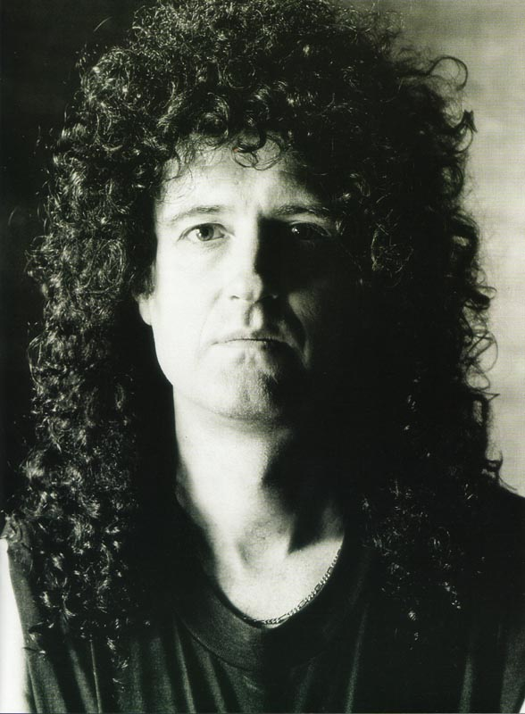

Brian May
Rocks Legend and Astrophysicist

- 1947 Born in Hampton Hill, Middlesex, England.
- 1968
- Formed the band Smile.
- Bsc in Physics from the Imperial College London, with honours.
- 1970 - 1995
- Co-founded the band Queen with Freddie Mercury and Roger Taylor.
- He played lead guitarist in Queen, and contributed lower-range backing vocals.
- May composed many songs for the band, including some of its greatest hits, such as "Fat Bottomed Girls", "We Will Rock You" and "The Show Must Go On".
- 1983 - 1999Side projects and solo works.
- 2007PhD in astrophysics from the Imperial College London, for work started in 1970 and completed in 2007.
- 2008 - 2013Chancellor of Liverpool John Moores University.
- 2015Collaborator on NASA's New Horizons Pluto mission.
For more information about this amazing guy, check out BrianMay.com